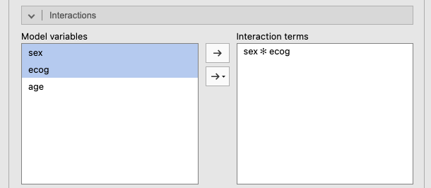
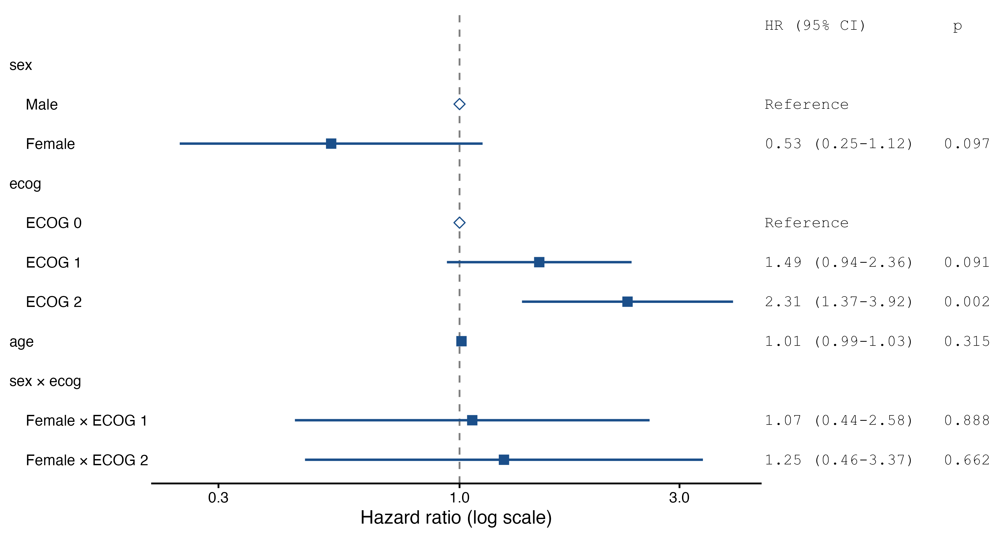

jamovi syntax
r <- prognosis::cox(data = lung, elapsed = time, event = event, eventLevel = "dead",
factors = vars(sex, ecog), covs = age, interactions = ~ sex:ecog,
forest = TRUE, showExplanations = TRUE)Question. Women had a lower hazard of death than men in the Cox example. Is that advantage the same whatever the performance status, or does it depend on ECOG? This is a question about effect modification (see interactions).
Keep the model of the Cox example (Factors sex, ecog; Covariate age). Open the Interactions section of the panel: the Model variables list holds the factors and covariates of the model. Select sex and ecog together (Ctrl-click, or ⌘-click on a Mac), click the lower arrow, the one with a small menu (→▾), and choose Interaction: the term sex ✻ ecog appears in Interaction terms (Figure 1). The plain arrow above it adds sex and ecog on their own as well; the module ignores those, since they are already in the model.

Two new tables appear.
Interaction tests
| χ² | df | p | |
|---|---|---|---|
| sex × ecog | 0.226 | 2 | .893 |
| Note. Likelihood-ratio test for adding the interaction; a small p suggests that the effect of one variable depends on the other. | |||
The interaction test is a likelihood-ratio test comparing the model with and without the interaction terms: χ² = 0.23 on 2 df (one extra coefficient for each combination of a non-reference sex level with a non-reference ECOG level), p = 0.893. There is no evidence that the effect of sex differs between ECOG groups.
Hazard ratios within subgroups
| 95% CI | |||||
|---|---|---|---|---|---|
| Effect of | Within | HR | Lower | Upper | p |
| sex: Female – Male | ecog = ECOG 0 | 0.527 | 0.247 | 1.122 | .097 |
| ecog = ECOG 1 | 0.561 | 0.353 | 0.892 | .014 | |
| ecog = ECOG 2 | 0.657 | 0.349 | 1.238 | .194 | |
| Note. Hazard ratio of the first variable within each level (or quartile) of the second; other variables at their reference level or median. | |||||
The hazard ratios within subgroups give the effect of the first variable of the term (women versus men) within each level of the second (ECOG). Other variables are held at their reference level or median; since age is not part of the interaction, its value does not change these HRs.
Only the middle row is “significant” (p = 0.014); the other two are not (p = 0.097 and p = 0.194). It is tempting to conclude that “being a woman is protective only in ECOG 1 patients”. That conclusion is wrong. The three HRs are very similar (0.53, 0.56, 0.66); the ECOG 1 group is simply the largest (113 of 226 patients), so its CI is the narrowest. A significant result in one subgroup and a non-significant one in another is not evidence that the effects differ; the interaction test is, and here it is far from significant (p = 0.893).
Hazard ratios
| 95% CI | |||||
|---|---|---|---|---|---|
| HR | Lower | Upper | p | ||
| sex | Male | 1.000 | |||
| Female | 0.527 | 0.247 | 1.12 | .097 | |
| ecog | ECOG 0 | 1.000 | |||
| ECOG 1 | 1.489 | 0.939 | 2.36 | .091 | |
| ECOG 2 | 2.314 | 1.366 | 3.92 | .002 | |
| age | per unit | 1.010 | 0.991 | 1.03 | .315 |
| sex × ecog | Female × ECOG 1 | 1.066 | 0.439 | 2.58 | .888 |
| Female × ECOG 2 | 1.248 | 0.462 | 3.37 | .662 | |
| Note. HR > 1: higher hazard (worse prognosis) than the reference level, or per one-unit increase of a covariate. Multivariable HRs are adjusted for the other variables in the model. With interactions, main-effect HRs apply at the reference level (or 0) of the interacting variable. | |||||
With an interaction in the model, the other rows change meaning (the note under the table says so):
Female (HR 0.53) is now the effect of sex in the reference level of ECOG (ECOG 0), which matches the first row of the subgroup table.ECOG 1 and ECOG 2 are the effects of ECOG in men (the reference level of sex).Female × ECOG 1, Female × ECOG 2) are ratios of hazard ratios: how much the female-versus-male HR is multiplied in ECOG 1 or 2 compared with ECOG 0. For example, 0.53 × 1.07 = 0.56, the HR for women in ECOG 1. Values near 1 mean no interaction.So when you keep an interaction, report the subgroup HRs, not the main-effect rows. When the interaction test is not significant, as here, remove the interaction and report the simpler model of the Cox example.

Interactions work the same way with a continuous covariate. Does the effect of age differ between men and women? Replace the interaction by age ✻ sex (select both, choose Interaction again), and set HR for covariates to per value below, 10:
Interaction tests
| χ² | df | p | |
|---|---|---|---|
| age × sex | 1.68 | 1 | .196 |
Hazard ratios within subgroups
| 95% CI | |||||
|---|---|---|---|---|---|
| Effect of | Within | HR | Lower | Upper | p |
| age (per 10) | sex = Male | 1.214 | 0.968 | 1.52 | .094 |
| sex = Female | 0.943 | 0.694 | 1.28 | .705 | |
Each 10 years of age multiplied the hazard by 1.21 in men and by 0.94 in women, but the interaction test is not significant (p = 0.196): the data cannot tell the two effects apart. When one variable is a factor and the other a covariate, the subgroup table always gives the HR of the covariate within each level of the factor, whatever the order of the term. When both are covariates (say age and a laboratory value), it gives the HR of the first at the 25th, 50th and 75th percentiles of the second.